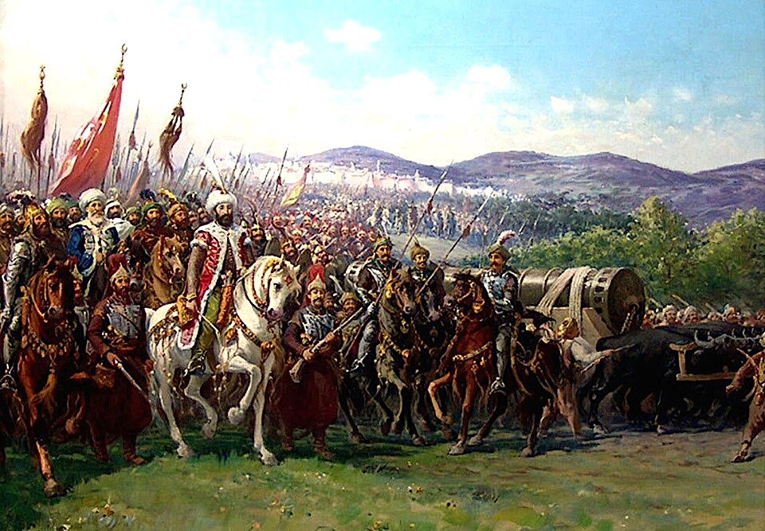

Constantinopla ha caído: los turcos entran a la ciudad de Constantino tras mil años de imperio
Al cabo de cincuenta y tres días de asedio, los cañones del sultán Mehmed abrieron las murallas que habían resistido veinte sitios. El emperador Constantino murió peleando en la brecha como un soldado más. La cristiandad tiembla.

La ciudad que fundó Constantino el Grande, la Roma nueva que guardó el saber antiguo y la fe de Oriente durante once siglos, amaneció hoy bajo el estandarte del Islam. Antes del alba, los jenízaros del sultán Mehmed, un joven de veintiún años que juró tomar la ciudad o morir, se lanzaron por las brechas que sus bombardas gigantes —una de ellas arrastrada por sesenta bueyes— llevaban semanas abriendo en las murallas de Teodosio. Los defensores, apenas siete mil hombres contra diez veces más, pelearon en las brechas hasta que cayó herido el genovés Giustiniani y el pánico hizo el resto.
Del último emperador de los romanos, Constantino undécimo de su nombre, cuentan los fugitivos que arrojó las insignias imperiales y se metió a morir en lo más espeso del combate, y que su cuerpo no ha sido hallado. Tres días de saqueo ha concedido el sultán a sus tropas, según la costumbre, y las escenas que refieren los que escaparon en las naves genovesas no son para escritas. En Santa Sofía, la iglesia más grande de la cristiandad, donde miles se habían refugiado a esperar el milagro, el muecín ha cantado esta tarde la oración del vencedor.
La ciudad cayó también por una deuda impaga: el fundidor húngaro Urbano ofreció primero sus cañones al emperador, que no tenía con qué pagarlos, y llevó entonces su ciencia al sultán, que pagó el cuádruple sin regatear. Su criatura mayor, una bombarda que arroja piedras de media tonelada y se oye a leguas, tardaba horas en cargarse: las murallas que resistieron mil años no estaban hechas para ese trueno nuevo. Y cuando la gran cadena del Cuerno de Oro cerró el paso a su flota, Mehmed hizo lo que nadie había imaginado: setenta naves cruzaron por tierra una colina entera, rodando sobre maderos ensebados, y amanecieron dentro del puerto. Contra un sitiador que muda el mar de lugar, la geografía deja de ser aliada.
Los fugitivos cuentan la última noche con detalles que parecen de libro sagrado: en Santa Sofía, griegos y latinos, que llevaban siglos disputándose los ritos, oraron juntos por primera y última vez, mientras el emperador pedía perdón a quienes hubiera ofendido y volvía a la brecha. Los presagios venían acumulándose para quien quisiera leerlos: un eclipse comió la luna llena hace una semana, la ciudad amaneció después envuelta en una niebla que no es de la estación, y en la procesión del lunes la santa imagen de la Virgen resbaló de las andas. Dios, murmuran los viejos del puerto, ya había hecho las valijas. Los turcos lo dicen de otro modo: estaba escrito.
Las naves que huyeron llevan a Italia lo que pudo salvarse: familias, reliquias y, quiera la fortuna, los libros —esos manuscritos griegos que los sabios de la ciudad venían desgranando hacia Venecia y Florencia desde hace años, y que ahora cruzarán el mar de a cientos con sus maestros detrás. Quizá sea ése el testamento de Bizancio: morir sembrando. Para el comercio, en cambio, la cuenta es más áspera: el camino de la seda y la especia queda en manos del turco, y ya hay en Génova y en Lisboa quien murmura que habrá que buscar las Indias por otra parte. Por el mar abierto, dicen los más audaces. Veremos adónde lleva esa locura.